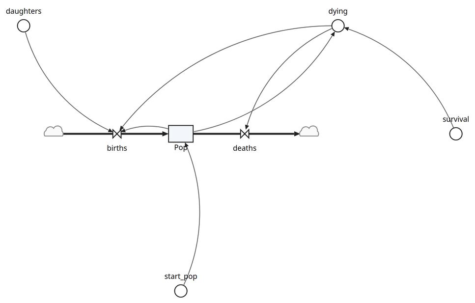

Random walk of a small population
Demographic stochasticity: each year every animal survives with probability 0.8, and each survivor produces a surviving daughter with probability 0.25 (a daughter, 0.5, that survives, 0.5), so the expected growth is zero. The population wanders at random until it dies out. Run it several times. (The program stopped at 0 or above 100; here the run is 100 years.)
It opens with its plots and its sliders: move a slider and the model runs again.
Open in SimileFrom Norman Owen-Smith's book Introduction to Modeling in Wildlife and Resource Conservation (Blackwell, 2007), converted from its TrueBASIC program RANDOMWALK.TRU and published here with his permission. The model spec: randomwalk.json.
